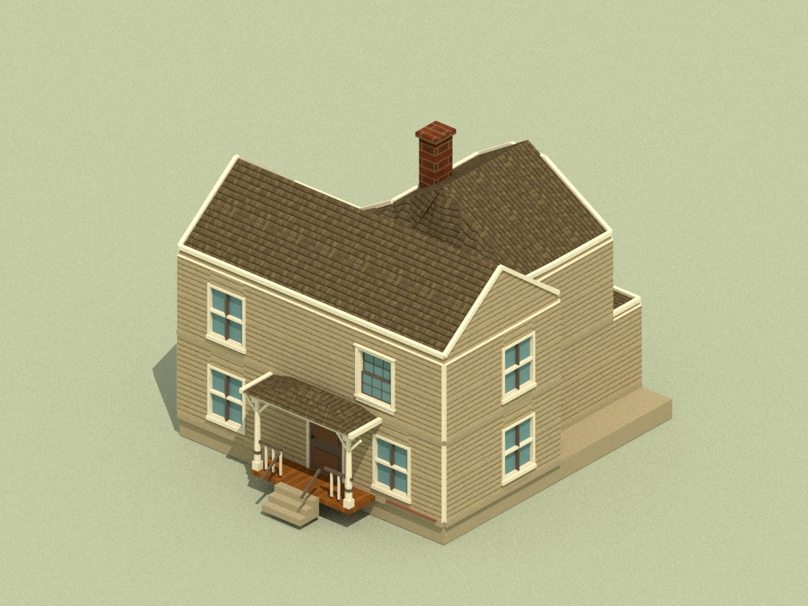
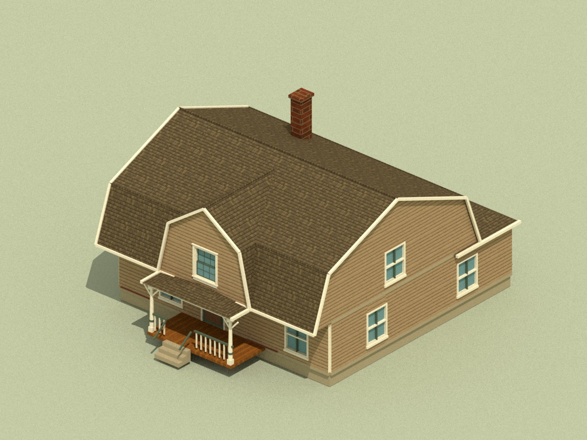
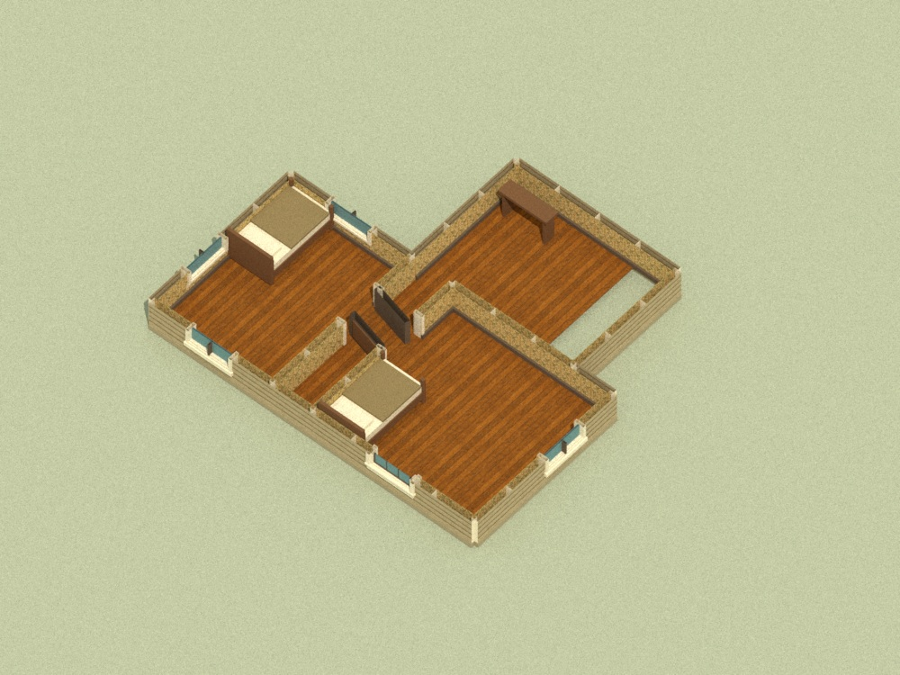
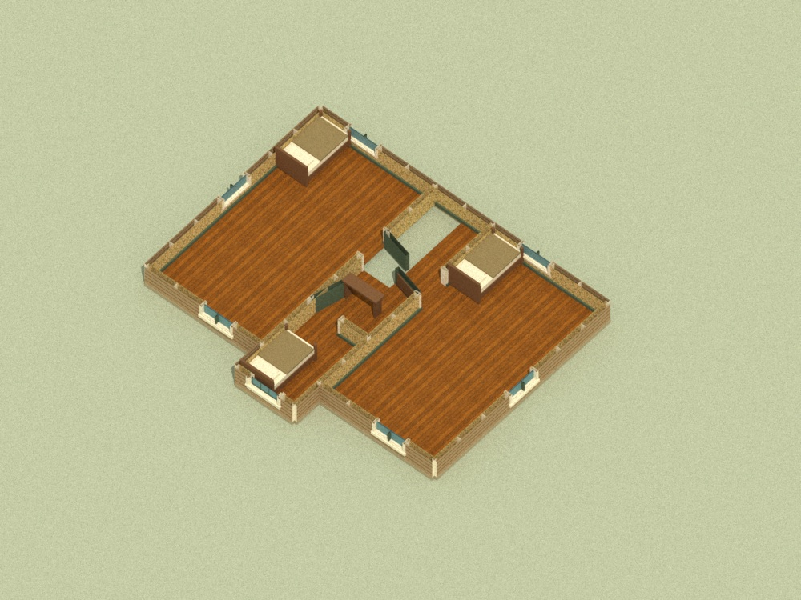

2 m bay: 0.5 m wall + 1 m opening + 0.5 m wall. Native scale. Actual mesh renders of Hopkins Nos. 13 and 15.
Room, door and stair plans preserved. Window traversal remains deferred. All 25 houses



